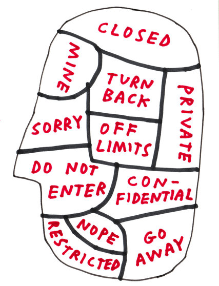
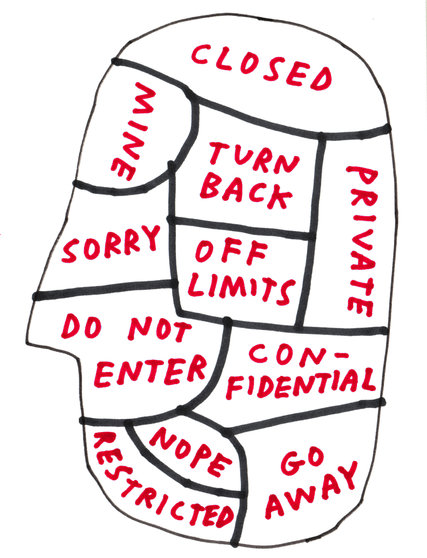

1- OFFLINE PRIVACY
1.1 'HET BEGIN VAN HET EINDE'Introductie
De plek waar alles kon, waar zij konden zijn wie ze wilden zijn, waar privacy niet bestond. Angst en schaamte bestonden niet, alles was mogelijk. Het was een paradijs: het Hof van Eden. Daarbij hadden Adam en Eva maar één belofte waar ze zich aan moesten houden: Het niet eten van de vruchten van de boom van kennis van goed en kwaad. Zij hebben echter deze belofte gebroken en hebben de 'Verboden Vrucht' gegeten. Door deze vrucht waren zij opeens heel bewust van zichzelf. De schaamte was geboren, dus ook de behoefte naar privacy. Wellicht is dit het begin van een einde. Het is een metafoor voor dit onderwerp: privacy. Deze metafoor laat ons zien hoe erg we onze privacy eigenlijk op prijs stellen en hoe wij onze persoonlijke ruimte nodig hebben om daarbij tot onszelf te kunnen komen. Het gaat echter ook om het beschermen van onszelf, onze gedachten, ons innerlijk en onze gevoelens.

1.2 DEFINITIE OFFLINE PRIVACY
Privacy, privésfeer, persoonlijke levenssfeer of eigenruimte is een afweerrecht dat de persoonlijke levenssfeer beschermt. De Van Dale omschrijft privacy als de persoonlijke vrijheid, het ongehinderd, alleen, in eigen kring of met een partner ergens kunnen vertoeven; gelegenheid om zich af te zonderen, om storende invloeden van de buitenwereld te ontgaan, een toestand waarin een mens er zeker van is dat zonder zijn toestemming zo weinig mogelijk andere mensen zich op zijn terrein zullen begeven. Daarbij komt tegenwoordig:
• Zelf bepalen wie welke informatie over ons krijgt
• De wens onbespied en onbewaakt te leven
Privacy is het recht hebben op persoonlijke vrijheid door ongehinderd alleen te zijn. Het is hierbij de bedoeling dat je zelf kan bepalen welke informatie iemand over jouw krijgt. Dit om de persoonlijke levenssfeer te beschermen. Je privacy.
Daarbij zijn natuurlijk uitzonderingen, zoals criminelen. Hierbij heeft privacy schending één doel: Het waarborgen van de veiligheid van andere mensen. Dat zijn logische redeneringen waarbij deze uitzonderingen worden getroffen, zodat politie en justitie de veiligheid van burgers kan waarborgen.
Regels voor privacy In Nederland zijn enkele specifieke regels en wetten vastgesteld met betrekking tot privacy. Dit naast de Europese en wereldwijde privacy wetten
 . Deze wetten hebben dan ook alleen betrekking op Nederland, en zijn dan ook verschillend ten opzichte van omliggende landen zoals bijvoorbeeld Duitsland. Dit heeft te onder andere te maken met onderlinge politieke en culturele verschillen.
. Deze wetten hebben dan ook alleen betrekking op Nederland, en zijn dan ook verschillend ten opzichte van omliggende landen zoals bijvoorbeeld Duitsland. Dit heeft te onder andere te maken met onderlinge politieke en culturele verschillen.Nederlandse grondwet artikel 10: privacy
In Nederland zijn wetten met betrekking tot privacy vastgelegd in de grondwet. Deze wetten houden in dat iedereen recht heeft op privacy. Hierbij zijn er wel uitzonderingen, bijvoorbeeld in het geval van het plegen van criminele activiteiten. Echter mag de overheid daarbij niet zomaar alle wetten overtreden, zoals bijvoorbeeld het gebruiken van alle persoonlijke gegevens.
Hier volgen nog een aantal punten die vermeld staan in de grondwet:
* Ieder heeft, behoudens bij of krachtens de wet te stellen beperkingen, recht op eerbiediging van zijn persoonlijke levenssfeer.
* De wet stelt regels ter bescherming van de persoonlijke levenssfeer in verband met het vastleggen en verstrekken van persoonsgegevens.
* De wet stelt regels inzake de aanspraken van personen op kennisneming van over hen vastgelegde gegevens en van het gebruik dat daarvan wordt gemaakt, alsmede op verbetering van zodanige gegevens.
Iedereen heeft dus het recht om te zien wat er over hem/haar is vastgelegd en kunnen gegevens veranderd worden als deze niet juist zijn. Daarbij wordt ook de vorm over de persoonlijke levenssfeer toegelicht. Dit betekent dat men recht heeft op beslotenheid; het met rust gelaten word
 en. De wet kan in bepaalde gevallen uitzonderingen treffen voor bijvoorbeeld misdaden etc. Onderstaand volgt een lijst met wat de persoonlijke levenssfeer precies omvat:
en. De wet kan in bepaalde gevallen uitzonderingen treffen voor bijvoorbeeld misdaden etc. Onderstaand volgt een lijst met wat de persoonlijke levenssfeer precies omvat:het huis
de briefwisseling
de communicatie via telefoon en andere communicatiemiddelen
het recht om niet te worden bespied of afgeluisterd
het recht op zorgvuldige behandeling van persoonlijke gegevens
het recht op eerbiediging van het innerlijk leven
het recht op eerbiediging van de lichamelijke integriteit
1.3 BESCHERMING VAN HET 'IK'
Over het algemeen associëren mensen privacy met persoonlijke privacy en de wetten en regels die daar voor gelden. Niet alleen juridisch gezien, de wetten en regels, maar ook ongeschreven regels. Regels die door een persoon zelf worden opgesteld om hun eigen privacy te waarborgen. Het gaat hierbij vaak om het waarborgen van hun gemoedsrust, regels die ze stellen zodat ze zich op hun gemak voelen. Die ongeschreven regels komen vaak voort uit de behoefte van mensen om zich tegen sociale druk te beschermen. Omdat ze bijvoorbeeld bang zijn om afgerekend te worden op hun uiterlijk, politieke of seksuele voorkeur of onderlinge cultuurverschillen.
Als je ze vraagt naar de geschreven regels zeggen de meeste mensen dat ze niks te verbergen hebben. Echter gaat het hier dus om een vorm van veiligheid, van hen zelf en van anderen. Maar hebben ze daadwerkelijk niks te verbergen? Het argument ''Nee ik heb niks te verbergen'' is voor niemand van toepassing, maar daar zijn we ons eigenlijk helemaal niet van bewust. Veel mensen lijken verwikkelt te zijn in een tweestrijd. Als je zegt dat je niks te verbergen hebt, waarom hebben we dan allemaal gordijnen in ons huis en gaan we naar de wc met de deur op slot? Tuurlijk zijn daar simpele antwoorden voor, zoals het sluiten van de gordijnen voor het licht van de lantaarnpalen en het op slot doen van de wc-deur tegen nare geurtjes. Maar wat het zegt over onze persoonlijke privacy is dat we hulpmiddelen gebruiken om schaamte te voorkomen. Gordijnen omdat je niet wilt dat anderen naar binnen kijken, en zien wat voor tv programma je kijkt. Een programma wat je heel graag kijkt maar voor iemand van jouw leeftijd niet sociaal geaccepteerd is. Je doet het slot op de deur van de wc om te voorkomen dat iemand je half naakte lichaam ziet, wat kan leiden tot schaamte. We hebben dus altijd wel wat te verbergen. Als je zegt dat je niks te verbergen hebt, bedoel je vanuit privacy oogpunt dat je bijvoorbeeld geen crimineel bent. Je wilt mensen een reden geven om jouw privacy niet te schenden, en sociaal geaccepteerd te worden.
We moeten privacy dus bekijken op een fundamenteler niveau. Privacy voert terug naar wat ons mens maakt. Daarom klopt het argument ''ik heb niks te verbergen'' niet, omdat we moeten beginnen bij de constatering dat privacy boven alles een menselijke eigenschap is.
 De belangrijkste verschijningsvorm van privacy is eigenlijk de privéruimte in ieder mens, de gedachtewereld, de gevoelens. Het innerlijk. Deze ruimte is waar gedachten en gevoelens zich privé afspelen en deze zijn alleen toegankelijk voor jezelf. Dit geheel heet het 'ik'. Dit wil echter niet zeggen dat het innerlijk nooit naar buiten treedt. Soms kiezen we ervoor om naar buiten te treden in de vorm van 'open stellen'. Wie je bent, hangt grotendeels af van je vermogen om te bepalen welk deel je van jouw innerlijk deelt met anderen. Het delen van het innerlijk is in iedere context totaal anders. Als je bij je vrienden of op je werk bent, verandert het 'ik' continu. Gelukkig maar, want je zou waarschijnlijk nooit zo tegen je werkgever spreken, zoals je dat bij je vrienden zou doen. Sociale relaties zijn dus niet mogelijk zonder iets te verbergen. Deze hele privacy kwestie is tegelijkertijd ook tijdsgebonden. Zo was het in de jaren zeventig geen probleem om er voor uit te komen dat je pedoseksueel bent. Er werd zelfs gepleit voor het recht om seks te hebben met kinderen. Tegenwoordig kun je hiervoor aangeklaagd worden. Dit kan ook wel gezien worden als een soort cultuuromslag. In de jaren vijftig was iedereen trots op het feit dat iedereen rookte. Met roken loopt men tegenwoordig niet meer snel te koop. Misschien is het over dertig jaar helemaal not done.
De belangrijkste verschijningsvorm van privacy is eigenlijk de privéruimte in ieder mens, de gedachtewereld, de gevoelens. Het innerlijk. Deze ruimte is waar gedachten en gevoelens zich privé afspelen en deze zijn alleen toegankelijk voor jezelf. Dit geheel heet het 'ik'. Dit wil echter niet zeggen dat het innerlijk nooit naar buiten treedt. Soms kiezen we ervoor om naar buiten te treden in de vorm van 'open stellen'. Wie je bent, hangt grotendeels af van je vermogen om te bepalen welk deel je van jouw innerlijk deelt met anderen. Het delen van het innerlijk is in iedere context totaal anders. Als je bij je vrienden of op je werk bent, verandert het 'ik' continu. Gelukkig maar, want je zou waarschijnlijk nooit zo tegen je werkgever spreken, zoals je dat bij je vrienden zou doen. Sociale relaties zijn dus niet mogelijk zonder iets te verbergen. Deze hele privacy kwestie is tegelijkertijd ook tijdsgebonden. Zo was het in de jaren zeventig geen probleem om er voor uit te komen dat je pedoseksueel bent. Er werd zelfs gepleit voor het recht om seks te hebben met kinderen. Tegenwoordig kun je hiervoor aangeklaagd worden. Dit kan ook wel gezien worden als een soort cultuuromslag. In de jaren vijftig was iedereen trots op het feit dat iedereen rookte. Met roken loopt men tegenwoordig niet meer snel te koop. Misschien is het over dertig jaar helemaal not done.Afbeelding: 1: Concept of the 'Self' Tucker Nichols – (2012) print voor het artikel Privacy and the Threat to the Self (New York Times) Formaat - onbekend
1.4 DE PANOPTICUM STAAT
Het concept van het panopticum (Latijn voor alziend) of panopticon (Grieks voor alziend) is gecreëerd door de Engelse verlichtingsfilosoof Jeremy Bentham in 1791. Het concept van het panopticum maakt het mogelijk om groepen mensen te controleren, te disciplineren, te bewaken, te bestuderen, te vergelijken en te verbeteren. Het bekendste voorbeeld hiervan is het herontwerp van een gevangenis instituut, waarbij het hoofdzakelijk draait om het controleren, disciplineren, bewaken, bestuderen, vergelijken en verbeteren van groepen mensen. Hierin kwam het concept van het panopticum dus tot uiting in de architectuur van een gevangenis.
Voorheen werden mensen in donkere kerkers geplaatst waarbij bewakers geen overzicht op de gevangenen hadden. Dat betekende dat gevangenen alle tijd hadden om ontsnappingsmogelijkheden te creëren. Totdat Jeremy Bentham met het idee kwam om de gevangenen boven de grond te plaatsen waarbij het gebouw bestond uit een toren met daar omheen ringen van cellen. De cellen bevatten twee ramen; één raam naar buiten toe en één raam naar de toren toe. Er was slechts een bewaker nodig om alle gevangen te bewaken, dit omdat hij vanuit zijn toren alle cellen in kon kijken. Dit gaf ook als voordeel dat gevangenen zich ervan bewust waren dat ze ten alle tijden bekeken werden. Dit had als positief effect dat ze niet meer probeerde te ontsnappen.
Het panopticum hoort bij de geordende maatschappij die alles zichtbaar maakt en beheerst. Volgens Bentham is het erg nuttig;
'Voor regeerders om voor hoogst belangrijke doeleinden te gebruiken' of een middel 'om alles wat met een zeker aantal mensen samenhangt, hun totale levensomstandigheden, te kennen en te beheersen.'
Dit hele idee van Bentham heeft echter ook wel zijn keerzijde. Het panopticum wordt ook wel gezien als een machtsmachine. Bentham beschrijft hoe in het panopticum macht en kennis samen gaan. Daarbij droomde Bentham van het uitgroeien van het panopticum idee dat in alles zou doordringen tot in een groot bewakend netwerk. Denk maar eens aan het totaal plaatje van de volgende maatregelen: Identificatieplicht, biometrisch paspoort, burgerservicenummer, koppeling bestanden, bewaartermijn verkeersgegevens (telefoon- en e-mailgegevens), slimme camera's, ambient intelligence (= intelligente en zelflerende technologie), rekeningrijden etc. Creëer je op die manier niet meer een maatschappij zonder vrijheid?
Het hele idee van het panopticum is steeds meer toepasbaar op onze Nederlandse maatschappij. Het controleren van mensen is normaler dan ooit. In Nederland is het controleren van burgers in de openbare ruimte eigenlijk de normaalste zaak van de wereld. Natuurlijk fungeert dit als bescherming van de mens. Volgens Brenno de Winter (onderzoeksjournalist) is bijvoorbeeld uit onderzoek gebleken dat het gebruik van bewakingscamera's nooit bewezen is.
Hoewel we direct ons gedrag aanpassen als we in de buurt van een camera komen. Een voorbeeld daarvan is ook iets wat lijkt op het concept van het panopticum. Je loopt een winkel in en wordt daar gelijk geconfronteerd met een tv scherm waarop je jezelf ziet lopen. Dit is een waarschuwing van de winkelier die je er op wilt wijzen dat je ten alle tijden kan worden gefilmd. Door het zien van het tv scherm plaats je jezelf gevoelsmatig in de rol van potentiele dief. In reactie hierop pas je je gedrag aan naar dat van een modelburger om zo, je niet bestaande onschuld te bewijzen.
In Nederland leven we op dit moment in een controlerende maatschappij. Neem een voorbeeld aan Rotterdam. Hier wordt steeds meer camerabewaking geplaatst in openbare ruimtes, maar daarbij blijft Rotterdam één van de meest onveilige steden in Nederland. Volgens de Winter gaat het hier om techno-optimisme: Wanneer er ergens meer technologieën gebruikt worden, zou het veiliger moeten worden. Dit fenomeen is echter nooit volledig bewezen.
Hoe staat dit in tegenstelling tot andere landen, zoals bijvoorbeeld Duitsland? Duitsland gaat op een andere manier om met privacy. Het 'controleren' van burgers in Duitsland ligt een stuk gevoeliger. Volgens Sven Guckers (privacy deskundige) heeft dit vooral te maken met Gestapo en Stasi . Ten tijden van de tweede wereld oorlog had vrijwel niemand privacy, persoonsgegevens uit het staatsarchief werden gebruikt om er achter te komen of iemand bijvoorbeeld joods of homoseksueel was. En burgers hadden geen privacy in hun eigen huis ten tijden van razzia's. Hierdoor zijn burgers in Duitsland wellicht veel bewuster van hun privacy dan andere landen. Ook in de politiek in Duitsland zijn er partijen sterk actief op het gebied van privacy, men wordt zich steeds bewuster van de eventuele gevolgen van bijvoorbeeld het opslaan van online data. De Piratenpartij heeft het mogelijk gemaakt om dataretentie te laten stoppen in samenwerking met de burgers (In 2010 is in Duitsland al door het constitutionele hof verklaard dat de Bewaarplicht in strijd is met de Grondwet). Dit komt voor uit het eerder gegeven voorbeeld over de manier waarop persoonsgegevens uit het staatsarchief door de nazi's werden gebruikt om bijvoorbeeld joden en homoseksuelen op te sporen om vervolgens te kunnen vervolgen. Uit angst dat er in de toekomst ooit nog een keer op zo een weerzinwekkende manier gebruik kan worden gemaakt van gestructureerd bewaarde persoonsgegevens, zijn Duitsers zich er maar al te goed van bewust wat voor gevaar het opslaan van data voor gevolgen kan hebben. Volgens Alexander Morlang (Piratenpartij) kan dataretentie gezien worden als de bouwstenen voor een dictatuur.
Nederland word steeds meer een totalitaire controlestaat, maar hoe ver wil Nederland nog gaan met de doorvoering van een totaal panopticum? Offline waarborgt de overheid al steeds minder de privacy van de mens, je wordt overal gefilmd en gevolgd. Gevolgd door bijvoorbeeld het reizen met een OV-chipkaart. Dit soort nieuwe technologieën kunnen een valkuil zijn in de huidige maatschappij. Door onderlinge koppeling van online data wordt er van iedereen een profiel aangemaakt waarin dag in dag uit allemaal data op binnenkomt. Mensen zijn hier zich hier vaak niet genoeg van bewust, omdat men hier niet voldoende van op de hoogte wordt gesteld. Online data is overal, en het verzamelen er van gaat dus ook hard aangezien bijna iedereen non stop online is op bijvoorbeeld zijn of haar smartphone.
Het internet speelt hierin dus een revolutionaire rol en draagt het ook bij aan het panopticum concept. Er kan steeds meer controle worden uitgevoerd. Dit omdat je aan het verzamelen van online data bijna niet kan ontkomen. Je moet of een gebruikersovereenkomst goedkeuren om van een service als bijvoorbeeld Facebook gebruik te kunnen maken. Of een cookie policy agreement accepteren om een webpagina te kunnen bezoeken. Wil je dit niet, dan wordt je beperkt in je mogelijkheden. Je kunt de service gedeeltelijk of helemaal niet gebruiken zonder dat je aanvaart dat je online data wordt opgeslagen.
We klikken met z'n allen dus gewoon op de oké knop als het aankomt op het ondertekenen van een gebruikers overeenkomst, zonder echt te lezen wat er in staat. We willen gebruik maken van de service net als onze vrienden en denken niet aan eventuele gevolgen. Naïviteit speelt één van de grootste rollen bij Nederlandse burgers, als het aan komt op het eventuele gevaar wat het verzamelen van data met zich mee kan brengen.
Dit kwam naar voren in het volgende nieuwsitem: EU-expert vindt Nederland naïef met privacy waarbij Peter Hustinx de naïviteit uitlegt:
Terwijl in andere EU-landen de bezorgdheid is toegenomen tot 80 à 90 procent van de ondervraagde bevolking, is die in Nederland als enige EU-land de laatste jaren juist drastisch gedaald van 50 naar slechts 35 procent. Van elke burger zijn vele gegevens vastgelegd bij diens bank, arts, internetbedrijf, ov-chip of de auto. ''Nederlanders denken vaak dat het niet uitmaakt, omdat ze niets te verbergen hebben'', zegt Hustinx. ''Maar dat is niet de vraag. Het gaat erom of we de techniek zo inrichten dat die goed werkt, zonder lekken en fouten. De systemen werken nu nog niet zo goed als nodig in een wereld die zo steunt op internet.''